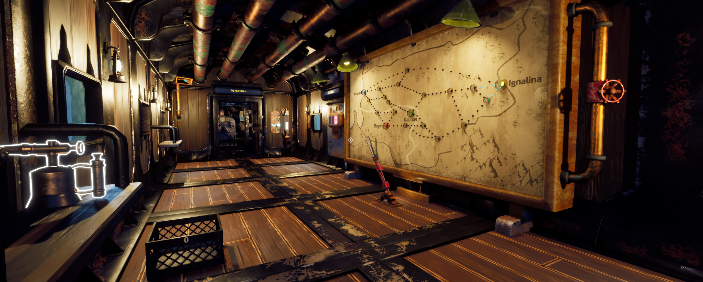

// OVERVIEW
Frosthaul was developed over seven weeks as the third group project during my studies at Futuregames. Our team consisted of 11 people: four designers, three artists, two programmers, one composer, and one producer.
My role was programming, and since there were only two programmers on the team, we both worked across most areas of the game's programming. My main focus, however, was on gameplay systems, profiling and optimization using Unreal Insights.
The project came with a few restrictions, including some form of multiplayer and the theme "You Had One Job." For the multiplayer requirement, we decided to implement online multiplayer using Steam's networking services. We interpreted the theme by putting the players in the role of train conductors with one simple job: deliver cargo. The challenge comes from the various gameplay systems and problems that make completing that seemingly simple task increasingly difficult.
// MY CONTRIBUTION AND TECHNICAL DETAILS
Gameplay & Interaction Systems
One of the main areas I worked on was the game's item and interaction systems, particularly how tools interact with malfunctions such as hull breaches and fires.
Both fires and hull breaches used an interaction system where progress was made while
the correct tool was being used. Hull breaches required a welding torch and sheet metal,
while fires required a fire extinguisher. Once the interaction progress was completed,
an OnCompleted function handled the resulting gameplay effects.
These systems also exposed events that designers could use to implement additional behaviour without modifying the underlying interaction code. For example, extinguishing a fire could broadcast an event that other systems could respond to.
Hull breaches required some additional handling because they were pre-placed along the train walls rather than spawned dynamically. They could be enabled and disabled as needed, resetting their interaction state whenever they became active. Repairing a breach also required attaching a sheet-metal item to it, which was consumed once the repair was completed.
Both systems communicated with the GameMode to affect the overall state of the train. Fires affected the train's movement, while hull breaches contributed to the temperature system and could eventually cause the players to freeze if they were not repaired.
Procedural Fire Placement
Unlike hull breaches, fires were spawned dynamically. I created a system using spawn areas placed along the train's ceiling pipes to generate fires at valid positions.
When a spawn area was activated, the system selected a random point along the pipe and generated several nearby positions. Raycasts were then performed at randomized angles to locate the pipe's surface. A fire could then be spawned at the resulting hit position and oriented using the direction of the raycast.
The same approach was also used when fires spread, allowing additional fires to appear around an existing fire while remaining correctly positioned on the pipe geometry.
Malfunction System
Together with the other programmer, I worked on the system responsible for triggering malfunctions throughout a run.
The GameMode periodically selected a malfunction after a randomized interval. Depending on the selected malfunction, the system could activate a fire spawn area or enable one or multiple hull breaches. This tied the individual fire and breach systems into the larger gameplay loop.
Multiplayer & QA
Since Frosthaul was an online multiplayer project, I also worked with Unreal Engine's networking and replication systems to ensure important gameplay states remained synchronized between the host and client.
Throughout development I also spent significant time testing the game, identifying bugs, debugging gameplay systems, and fixing issues discovered during both internal testing and playtests.
// PROCESS & PROBLEM SOLVING
Work in progress.....
// WHAT I LEARNED
Work in progress.....